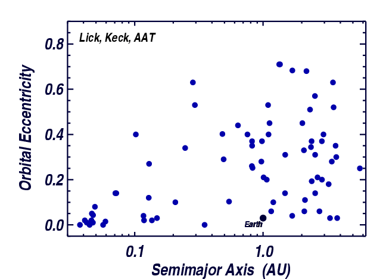

Eccentricity vs. Semimajor axis for extrasolar planets. The 75 planets shown were
found in a Doppler survey of 1300 FGKM main sequence stars using the
Lick, Keck, and AAT telescopes. The survey was carried out by
the California-Carnegie planet search team.
Back to discussion of eccentricities
Exoplanets home